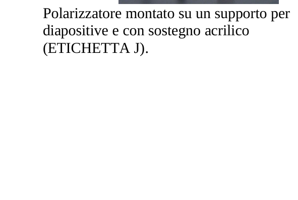
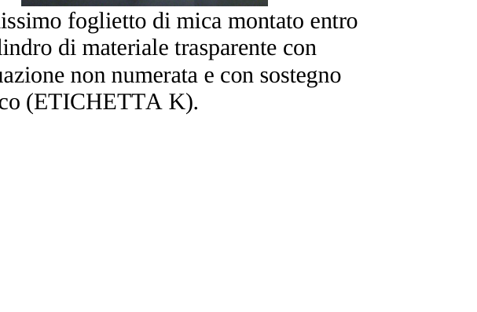
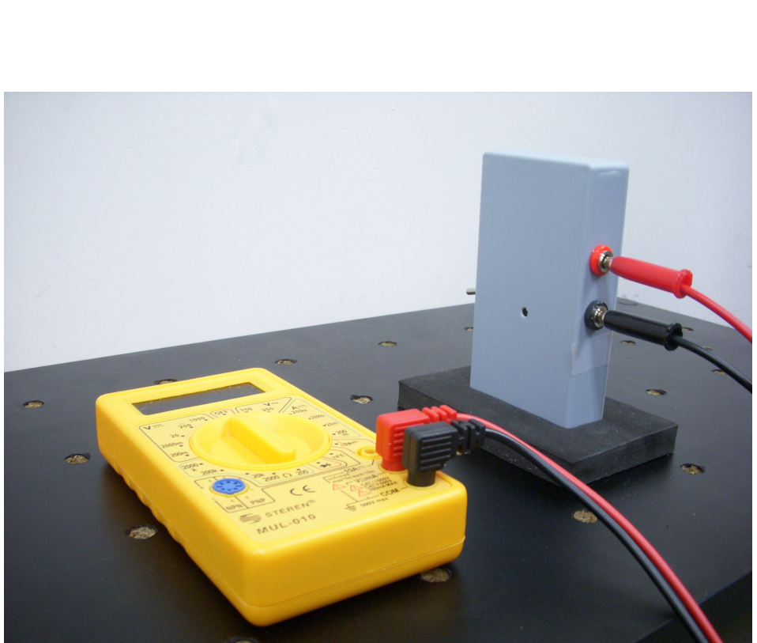
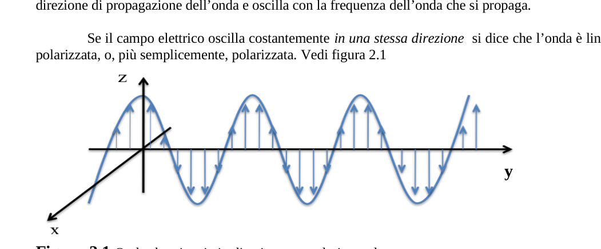
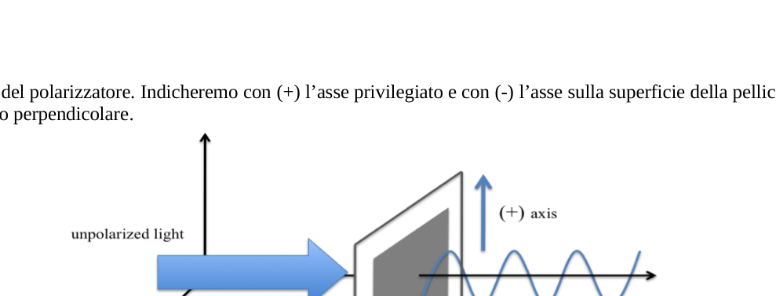
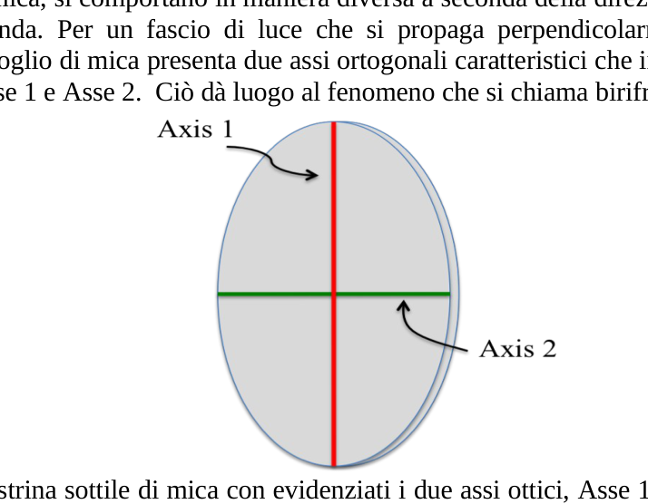
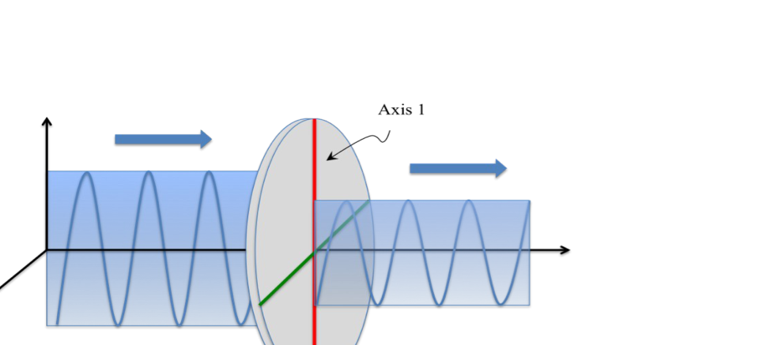
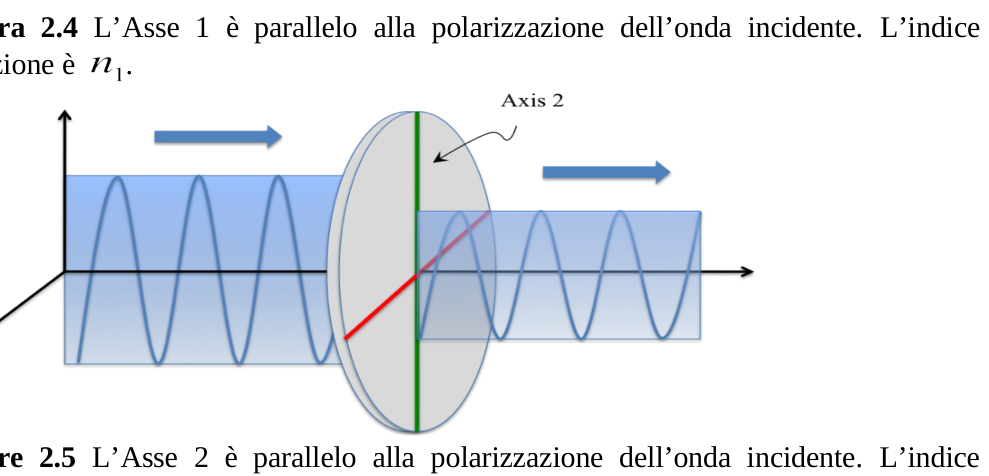
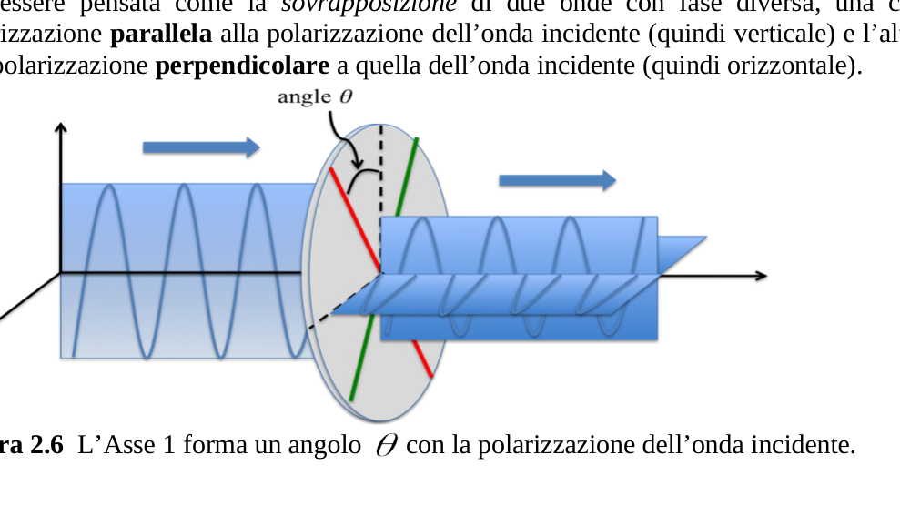

Birifrangenza della mica
In questo esperimento misurerai la birifrangenza della mica, un cristallo usato spesso per componenti ottici polarizzanti.
Materiali
Oltre alla strumentazione descritta in 1), 2) e 3) userai:
- Due filtri polarizzatori montati in supporti da diapositive e provvisti di un sostegno acrilico (ETICHETTA J).
- Un foglietto di mica assai sottile montato entro un cilindro di plastica dotato di una graduazione non numerata. Un supporto acrilico per sostenere il cilindro (ETICHETTA K).
- Il sistema del Photodetector: un photodetector in una scatola di plastica, cavetti di collegamento e una basetta gommosa. Un multimetro per misurare la tensione in uscita dal photodetector (ETICHETTA L).
- Una calcolatrice.
- Cartoncini bianchi, nastro di carta adesiva, bastoncini di sostegno, forbici, squadrette.
- Matite, carta e carta millimetrata.
Descrizione del fenomeno
La luce è un’onda elettromagnetica trasversale con il campo elettrico che sta in un piano perpendicolare alla direzione di propagazione dell’onda e oscilla con la frequenza dell’onda che si propaga.
Se il campo elettrico oscilla costantemente in una stessa direzione si dice che l’onda è linearmente polarizzata (o, più semplicemente, polarizzata). (Figura 2.1: onda che viaggia in direzione e polarizzata lungo .)
Un filtro polarizzatore è una pellicola a cui è associato un asse privilegiato parallelo alla superficie della pellicola, così che la luce trasmessa attraverso di esso emerge polarizzata lungo l’asse del polarizzatore. Si indicherà con l’asse privilegiato e con l’asse ad esso perpendicolare sulla superficie della pellicola. (Figura 2.2.)
Materiali trasparenti di uso comune, come il vetro delle finestre, trasmettono la luce senza modificarne lo stato di polarizzazione, poiché il loro indice di rifrazione non dipende né dalla direzione né dalla polarizzazione dell’onda incidente. Molti cristalli però, come la mica, si comportano in maniera diversa a seconda della direzione del campo elettrico dell’onda. Per un fascio di luce che si propaga perpendicolarmente alla sua superficie, un foglio di mica presenta due assi ortogonali caratteristici — Asse 1 e Asse 2 — che danno luogo al fenomeno chiamato birifrangenza. (Figura 2.3.)
Caso 1. Uno degli assi (Asse 1 o Asse 2) è parallelo alla direzione di polarizzazione dell’onda incidente. L’onda trasmessa conserva il suo stato di polarizzazione, ma la propagazione avviene come se il materiale avesse indice di rifrazione oppure a seconda dei due casi. (Figure 2.4 e 2.5.)
Caso 2. L’Asse 1 forma un angolo con la direzione di polarizzazione dell’onda incidente. La luce trasmessa può essere pensata come la sovrapposizione di due onde con fase diversa: una con polarizzazione parallela alla polarizzazione dell’onda incidente (verticale) e l’altra con polarizzazione perpendicolare (orizzontale). (Figura 2.6.)
Chiama l’intensità dell’onda trasmessa parallela alla polarizzazione dell’onda incidente, e l’intensità dell’onda trasmessa perpendicolare. Queste intensità dipendono dall’angolo , dalla lunghezza d’onda della sorgente di luce monocromatica, dallo spessore della lastrina e dal valore assoluto della differenza fra i due indici di rifrazione, . Quest’ultima quantità si chiama birifrangenza del materiale ed è lo scopo di questo esperimento misurarla.
La dipendenza di e dall’angolo è complicata a causa di altri effetti (come l’assorbimento da parte della mica). Si possono tuttavia ottenere espressioni approssimate e molto semplici per i valori normalizzati delle intensità, e , definiti come:
Si può mostrare che le intensità normalizzate sono (approssimativamente):
dove è la differenza di fase fra le onde trasmesse (quella parallela e quella perpendicolare), data da:
dove è lo spessore della piastrina di mica, la lunghezza d’onda della radiazione incidente e la birifrangenza.
Apparecchiatura sperimentale
Compito 2.1 — Montaggio sperimentale per la misura delle intensità (1.0 punto)
Progetta un modo per usare le apparecchiature disponibili al fine di misurare le intensità e dell’onda trasmessa, in funzione dell’angolo di uno qualunque degli assi ottici (figura 2.6). Presenta il tuo progetto riportando opportunamente sul disegno del banco ottico le ETICHETTE dei diversi dispositivi. Usa i segni convenzionali e per indicare il verso di polarizzazione dei polarizzatori.
- Compito 2.1 a) Montaggio sperimentale per la misura di (0.5 punti).
- Compito 2.1 b) Montaggio sperimentale per la misura di (0.5 punti).
Allineamento del fascio laser. Allinea il fascio laser in modo che sia parallelo alla tavola e incida sul centro del cilindro che contiene la mica. Puoi effettuare l’allineamento usando uno dei cartoncini bianchi per intercettare il fascio di luce e seguirne il percorso. Si possono ottenere aggiustamenti fini agendo sullo specchio mobile.
Photodetector e multimetro. Il photodetector produce una tensione linearmente proporzionale all’intensità della luce che lo colpisce; misura tale tensione con il multimetro. Quando la luce laser non incide sul photodetector si misura l’intensità della luce di fondo (circa ). Non effettuare correzioni in base alla luce di fondo quando prendi le misure di intensità.
ATTENZIONE: La luce laser è parzialmente polarizzata ma non si sa in quale direzione. Per ottenere una luce polarizzata che consenta buone letture di intensità, metti un polarizzatore con uno dei suoi assi, oppure , in direzione fissa verticale e agisci in modo da ottenere un massimo di intensità trasmessa in assenza di ogni altro dispositivo ottico.
Misura delle intensità
Compito 2.2 — La scala per la determinazione dell’angolo (0.25 punti)
Il cilindro che contiene la mica presenta una graduazione regolare. Determina il valore in gradi che corrisponde al minimo intervallo, cioè all’arco fra due linee consecutive.
Trovare approssimativamente lo zero di e la disposizione degli assi della mica.
Prima di tutto conviene identificare la posizione di uno dei due assi della mica (Asse 1). È quasi certo che questa posizione non coincida con una delle linee del cilindro graduato. Prendi come origine provvisoria la linea più vicina della graduazione e chiama gli angoli misurati rispetto a questa origine.
Compito 2.3 — Misura di e (3.0 punti)
Misura le intensità e per un numero adeguatamente elevato di angoli . Riporta le tue misure nella Tabella I. Cerca di prendere le misure di e per le stesse posizioni del cilindro con la mica (cioè per un valore fisso di ).
Compito 2.4 — Trovare uno zero appropriato per (1.0 punto)
La collocazione dell’Asse 1 definisce lo zero dell’angolo . Per determinare lo zero degli angoli puoi procedere graficamente o numericamente. In posizioni abbastanza vicine ad un massimo o ad un minimo la relazione può essere approssimata con una parabola:
e il minimo (o massimo) della parabola è dato da:
Qualunque sia il metodo usato, otterrai uno scostamento rispetto all’origine provvisoria; gli angoli corretti sono . Scrivi il valore dello scostamento in gradi.
Analisi dei dati
Compito 2.5 — Scegliere la relazione appropriata (0.5 punti)
Prendi oppure per elaborare un metodo che ti consenta di determinare la differenza di fase . Descrivi la relazione fra le variabili che vuoi utilizzare.
Compito 2.6 — Analisi dei dati e differenza di fase
- Usa la Tabella II per scrivere i valori delle variabili necessari per sviluppare il metodo di determinazione scelto. Assicurati di usare i valori corretti per gli angoli e includi le incertezze. Usa la carta millimetrata per mettere in grafico i valori delle variabili scelte (1.0 punto).
- Sviluppa un’analisi dei dati per ottenere la misura della differenza di fase e riporta i risultati con le incertezze. Riporta tutte le formule usate per analizzare i dati e fai l’analisi grafica dei risultati (1.75 punti).
- Calcola il valore della differenza di fase in radianti, inclusa la sua incertezza, nell’intervallo (0.5 punti).
Compito 2.7 — Calcolo della birifrangenza (1.0 punto)
Si può notare che aggiungere alla differenza di fase (con intero qualsiasi), o cambiarne il segno, lascia invariati i valori delle intensità normalizzate, ma modifica il valore della birifrangenza. Per calcolare correttamente la birifrangenza a partire dal valore di trovato nel Compito 2.6 si devono usare le seguenti relazioni:
oppure
dove il valore dello spessore della lastrina di mica è scritto sul cilindro che la contiene (in micrometri; ). Assumi che l’incertezza di sia . Per la lunghezza d’onda del laser puoi usare il valore trovato nel Problema 1 oppure il valore medio fra e , che definisce la banda del rosso.
Riporta sul foglio risposte i valori di e di e il valore della birifrangenza compresa la sua incertezza. Scrivi le formule usate per determinare l’incertezza.
p.1 — Polarizzatore montato su supporto

p.1 — Foglietto di mica su supporto acrilico

p.3 — Multimetro e fotodetector collegati

p.3 — Figura 2.1 onda che viaggia lungo z

p.4 — Figura 2.2 luce polarizzata e non polarizzata

p.4 — Figura 2.3 lastrina di mica con assi

p.5 — Figura 2.4 asse parallelo alla polarizzazione

p.5 — Figura 2.5 asse 2 parallelo alla polarizzazione

p.5 — Figura 2.6 asse a angolo theta

Topic: Wave Optics, Oscillations & Waves, Electromagnetism Metodi: Superposition Principle, Interference & Diffraction Analysis, Experimental Data Analysis Competenze: Experimental Data Analysis, Measurement & Instrumentation, Graph Linearization Objects: Mirror Fonte: Testo (PDF) — p.1 Soluzione: Soluzioni (PDF)
♪ ♪ Bit of a freak of a bitch ♪
In this experiment, you’ll measure the bifurcation of mica, a crystal often used for polarizing optical components.
♪ ♪ Materials ♪
In addition to the equipment described in 1), 2) and 3) you will use:
- Two polarizing filters mounted on slide supports and equipped with acrylic support (ETICHETTA J).
- A very thin mica sheet mounted inside a plastic cylinder with an unnumbered grade. A supporting acrylic to support the cylinder (ETICHETTA K).
- The Photodetector system: a photodetector in a plastic box, connecting cables and a rubber base. A multimeter for measuring the output voltage from the photodetector (ETICHETTA L).
- A calculator.
- White cardboard, tape, support sticks, scissors, squares.
- Pencils, paper and paper.
Describe the phenomenon
Light is a transverse electromagnetic wave with an electric field that is perpendicular to the direction of propagation of the wave and oscillates with the frequency of the wave that propagates.
If the electric field is constantly oscillating in the same direction, the wave is said to be linearly polarized (or, more simply, polarized). *(Figure 2.1: wave traveling in the direction and polarized along .) *
A polarizer filter is a film to which a privileged axis parallel to the surface of the film is associated, so that the light transmitted through it emerges polarized along the axis of the polarizer. The axis of the film shall be and the axis perpendicular to it shall be . (Figura 2.2.)
Transparent materials of common use, such as window glass, transmit light without changing its polarization state, as their refractive index does not depend on either the direction or the polarization of the incident wave. Many crystals, like mica, behave differently depending on the direction of the wave’s electric field. For a beam of light propagating perpendicular to its surface, a mica sheet has two characteristic orthogonal axes Axis 1 and Axis 2 which give rise to the phenomenon called birifrangence. (Figura 2.3.)
Case 1. One of the axes (Axis 1 or Axis 2) is parallel to the direction of polarization of the incident wave. The transmitted wave retains its polarization state, but propagation occurs as if the material had a refractive index or depending on the two cases. (Figure 2.4 e 2.5.)
Case 2. Axis 1 forms an angle with the direction of polarization of the incident wave. La luce trasmessa può essere pensata come la sovrapposizione di due onde con fase diversa: una con polarizzazione parallela alla polarizzazione dell’onda incidente (verticale) e l’altra con polarizzazione perpendicolare (orizzontale). (Figura 2.6.)
Caller the transmitted wave intensity parallel to the polarization of the incident wave, and the transmitted wave intensity perpendicular. These intensities depend on the angle , the wavelength of the monochrome light source, the thickness of the blade and the absolute value of the difference between the two refractive indices, . This last quantity is called the material’s birfrangence and is the purpose of this experiment to measure it.
The dependence of and on the angle is complicated by other effects (such as absorption by mica). However, approximate and very simple expressions can be obtained for the normalized intensity values, and , defined as:
The normalised intensities can be shown to be (approximately):
where is the phase difference between the transmitted waves (the parallel and the perpendicular), given by:
where is the thickness of the mica plate, the wavelength of the incident radiation and the bifurcation.
♪ experimental equipment ♪
Compito 2.1 — Montaggio sperimentale per la misura delle intensità (1.0 punto)
Design a way to use the available equipment to measure the and intensities of the transmitted wave, depending on the angle of any of the optical axes (Figure 2.6). Present your project by showing the ETICHETTE of the different devices on the optical bench design. Use the conventional signs and to indicate the direction of polarization of the polarizers.
- **Task 2.1 a) ** Experimental assembly for measuring ****
- **Task 2.1 b) ** Experimental assembly for measuring **** 0.5 points.
Lineating the laser beam. Line the laser beam so that it is parallel to the table and hits the center of the cylinder containing mica. You can make the alignment using one of the white cards to intercept the beam of light and follow its path. Fine adjustments can be made by acting on the moving mirror.
Photodetector and multimeter. The photodetector produces a linearly proportional voltage to the intensity of the light that hits it; it measures this voltage with the multimeter. When the laser light does not affect the photodetector, the intensity of the background light is measured (approximately ). Do not make adjustments to the background light when taking the intensity measurements.
** ATTENTION: ** The laser light is partially polarized but it is not known in which direction. To obtain a polarized light that allows good intensity readings, place a polarizer with one of its axes, or , in a fixed vertical direction and act to achieve maximum transmitted intensity in the absence of any other optical device.
♪ ♪ Measuring the intensities ♪
The angle of the measurement scale is Task 2.2 The angle measurement scale (0.25 points)
The cylinder containing mica has a regular graduation. Determines the value in degrees that corresponds to the minimum interval, i.e. the arc between two consecutive lines.
Finding approximately the zero of and the arrangement of the mica axes.
First, the position of one of the two axes of mica (Axis 1) should be identified. It’s almost certain that this position doesn’t match one of the lines of the graduated cylinder. Take as provisional origin the nearest line of the graduation and call the angles measured relative to this origin.
Compito 2.3 — Misura di e (3.0 punti)
Measure the intensities and for a sufficiently high number of angles . Report your measurements in Table I. Try to take the measurements of and for the same cylinder positions with mica (i.e. for a fixed value of ).
Compito 2.4 — Trovare uno zero appropriato per (1.0 punto)
The position of the axis 1 defines the zero of the angle . To determine the angle zero, you can proceed graphically or numerically. In positions close enough to a maximum or a minimum the ratio can be approximated by a parabola:
and the minimum (or maximum) of the parable is given by:
Whatever method is used, you will get a deviation from the provisional origin; the correct angles are . Write down the value of the deviation in degrees.
Analysis of the data
Compito 2.5 — Scegliere la relazione appropriata (0.5 punti)
Take or to develop a method that allows you to determine the phase difference . Describe the relationship between the variables you want to use.
Compito 2.6 — Analisi dei dati e differenza di fase
- Use Table II to write the values of the variables needed to develop the chosen method of determination. Make sure you use the correct values for the angles and include uncertainties. Use the millimeter paper to chart the values of the selected variables **(1.0 point) **.
- Develops a data analysis to obtain the measurement of the phase difference and reports the results with uncertainties. Returns all the formulas used to analyze the data and performs the graphical analysis of the results **(1.75 points) **.
- Calculate the value of the phase difference in radiants, including its uncertainty, in the **** range.
Compito 2.7 — Calcolo della birifrangenza (1.0 punto)
It can be noted that adding to the phase difference (with any integer), or changing the sign, leaves the values of the normalised intensities unchanged, but changes the value of the bifrangence. To correctly calculate the bifrangence from the value of found in Task 2.6 the following ratios must be used:
or
where the value of the thickness of the mica strip is written on the cylinder containing it (in micrometres; ). Assume that the uncertainty of is . For the laser wavelength, you can use the value found in Problem 1 or the mean value between and , which defines the red band.
Report on the reply sheet the values of and and the value of the bifrange including its uncertainty. Write down the formulae used to determine uncertainty.
p.1 — Polarizzatore montato su supporto
p.1 — Foglietto di mica su supporto acrilico
p.3 — Multimetro e fotodetector collegati
**p.3 ** Figure 2.1 wave traveling along z
p.4 — Figura 2.2 luce polarizzata e non polarizzata
**p.4 ** Figure 2.3 Axis mica strip
p.5 — Figura 2.4 asse parallelo alla polarizzazione
p.5 — Figura 2.5 asse 2 parallelo alla polarizzazione
p.5 — Figura 2.6 asse a angolo theta
Topic: Wave Optics, Oscillations & Waves, Electromagnetism Metodi: Superposition Principle, Interference & Diffraction Analysis, Experimental Data Analysis Competenze: Experimental Data Analysis, Measurement & Instrumentation, Graph Linearization Objects: Mirror Fonte: Testo (PDF) — p.1 Soluzione: Soluzioni (PDF)